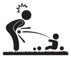

Kaza geliyorum demez
 Neler Bekliyor?
Neler Bekliyor?
1. Adım: Bir eczaneye git ve hani şu çocuk kafasını vurup da şişirdiğinde sürülen ve çarpan bölgenin şişip morarmasını engelleyen kremlerden iste.
2. Adım: Güvenlik önlemleri al.
3. Adım: Aldığın kremi uf olan yere sür.
Çünkü sen ne kadar, “Hahahah bütün tehlikeleri ortadan kaldırdım artık bir şey olmaz” desen de o çocuk kafayı vuracak bir yeri mutlaka bulacak. Sonra sinir bozucu süreç başlayacak. Eşin gelecek ve sanki sen çocuğu alıp bile isteye yerden yere vurmuşsun gibi surat yapacak. Ya da sen ona yapacaksın. Sonra bunu psikologla falan konuşacaksınız birlikte, söz vereceksiniz birbirinize çocuğa bir şey olduğunda birbirinizi suçlamayacağınıza falan. Tamam, söz dinleyip hakikaten susacaksınız böyle durumlarda karşılıklı, ama o pis bakışları görebiliyorum şimdiden. Hani şu, gene mi düşürdün çocuğu, o düşerken sen napıyodun? bakışından bahsediyorum. Yani “Olur canım, düşe kalka büyüyecek” cümlesini söylerken attığın bakış, bildin mi?
Tek çocuğum olsa güvenlik önlemlerine bakışım daha farklı olurdu. Evdeki eşyaları kaldırmaz, çocuğa onlarla birlikte yaşamayı öğretebilirdim mesela.
Evde çok çocuk olunca birbirlerine istemeden zarar verme ihtimalleri daha yüksek oluyor. Kendi dengelerini bulamadıkları için sık sık çarpışıyorlar, aynı yerden tutunmaya çalışırken birbirlerini itebiliyorlar, yerde buldukları sert bir cismi birbirlerinin kafasına atabiliyorlar ya da yaramazlık konusunda birbirlerini gaza getirebiliyorlar. Her koşulda tek çocuğun güvenlik kontrolü üç çocuğa göre daha kolay. Bu kadarına gerek duyar mısın bilmiyorum, ama birkaç bilindik güvenlik önlemini paylaşayım.
- Deterjanlar neden hep lavabonun altındaki o ilk dolapta durur bir bilen var mı? Çocuklar kolay ulaşsın diye olabilir mi? Deterjanları üst raflara kaldır ve çocuklar o deterjanları gerçek fonksiyonlarıyla kullanıp da sana yardım edebilecek yaşa gelene kadar indirme. İçeni var, vücuduna süreni var, gözüne kaçıranı var.
- Mutfakta ocak en tehlikeli yer. Çocuğu mutfağa sokma. Kucağında bebekle mutfağa girip yemek yapmaya çalışma. Gereksiz bir güç gösterisi.
- Yemek pişirmek için en arkadaki ocağı, yani çocuğa en uzak olan ocakları kullanmayı adet haline getir. (Aynı anda 4 tane yemek pişirecek kadar marifetliysen zaten aşmışsın demektir, burayı geçebilirsin.)
- Bıçakları ortada bırakmamayı söylemeye gerek yok.
- Banyolarda klozet kapaklarını kapalı tutmayı alışkanlık haline getir. Hem bakteri patlamasını, hem de yürüyen canavarın kolunu sokup karıştırmasını engellersin. Bu davranışı pekiştirmeye erken başla, amaaaan çocuk yürüyene kadar daha kaç ay var, hele bi yürüsün, falan deme. Klozet kapağını kapalı tutmak acayip bir disiplin gerektiriyor. Bakıcıları bu konuda bin kez uyardım, tuvalete “kapağı kapatmayı unutma” diye yapışkanlı etiket yapıştırdım, gene olmadı.
(Daldan dala konuyorum, bir düzen bir sıra yok. Bu satırları yazarken çocuklar hasta, bakıcı hasta, içeriden öksürük sesleri koro halinde yükseliyor. Gel de kafanı toplayıp doğru düzgün yaz.)
- Çocukların yeni yeni yürümeye başlarken çorapları çok kayıyor. Bunun için altları kaydırmaz tabanlı çoraplardan al. Bu çoraplar öyle her yerde bulunmuyor, bulursan yedekli al.
- Bütün elektrik prizlerini çocuk güvenlikli prizlerle değiştirin. Bunların kapaklı olanları var. Bir arkadaşım kapaklı elektrik prizi yaptırmıştı. Çocukları kırıp atmış. Hatta açılıp kapandığı için çok daha hoşlarına gitmiş. Sonra arkadaşım da o kapakları bantlarla yapıştırmış. Bu sefer de çocuk bandı kemirmiş. Bu hikâyeden sonra kapaklı prizi eledik. Onun yerine içten kilitli prizlerden aldık. Çok enteresan bir şekilde, artık o prizlerin içinde bizim göremediğimiz ne görüyorlarsa, bütün çocuklar günde bir kez gidip o prizleri parmaklıyorlar. En azından prize gittiğinde içiniz rahat olur.
- Köşeli mobilyaların sivri kısımlarına koruyucu alın. Bunlar yapı marketlerde ve çocuk mağazalarında set halinde satılıyor.
- Çocuk milletinin çok ilgisini çeken bir diğer nokta, çekmeceler. Çekmece kilitleri mobilyanın içine vidalanıyor. Biz mobilyalara kıyamadık. Onun yerine çekmecelerin kulplarını söktük. Böylece isteseler de açamadılar. Gerçi biz de açamadık. Kulpları çocuklar büyüyünce takarız dedik, şimdi düşündüm bak, nereye koyduğumu zerre kadar hatırlamıyorum.
- Eviniz merdivenliyse merdiven kapıları faydalı.
- Benim en büyük korkum pencereler. PVC pencere kollarının kilitli sistemleri var. Yakın zamanda tüm pencere ve balkon kapısı kollarını kilitli olanlarla değiştirdik. Evi havalandırdıktan sonra pencereleri kilitliyor ve anahtarı üzerinden alıyorum.
- Televizyon, konsol gibi çekip üzerlerine düşürebilecekleri eşyaları sabitleyin.
- Aman işte ne bileyim, fazla da psikopata bağlamadan, şu da tehlikeli olabilir dediğiniz gözünüze takılan şeyleri kaldırın.
 Sıkıcı Tarafı
Sıkıcı Tarafı
Alınan tedbirler adamın elini kolunu bağlar. Üst kata mı çıkacaksın merdivenden önce koruma kapısını aç. Pencereyi mi açacaksın, hele önce bir kilidi aç. Çekmecelerle zaten hiç uğraşma. Nasıl oluyor da aldığın tüm önlemlere rağmen düşüp kafasını çarpacak bir yer buluyorlar, anlamaya hiç uğraşma.
 Eğlenceli Yanı
Eğlenceli Yanı
On dakika düşündüm, bulamadım.